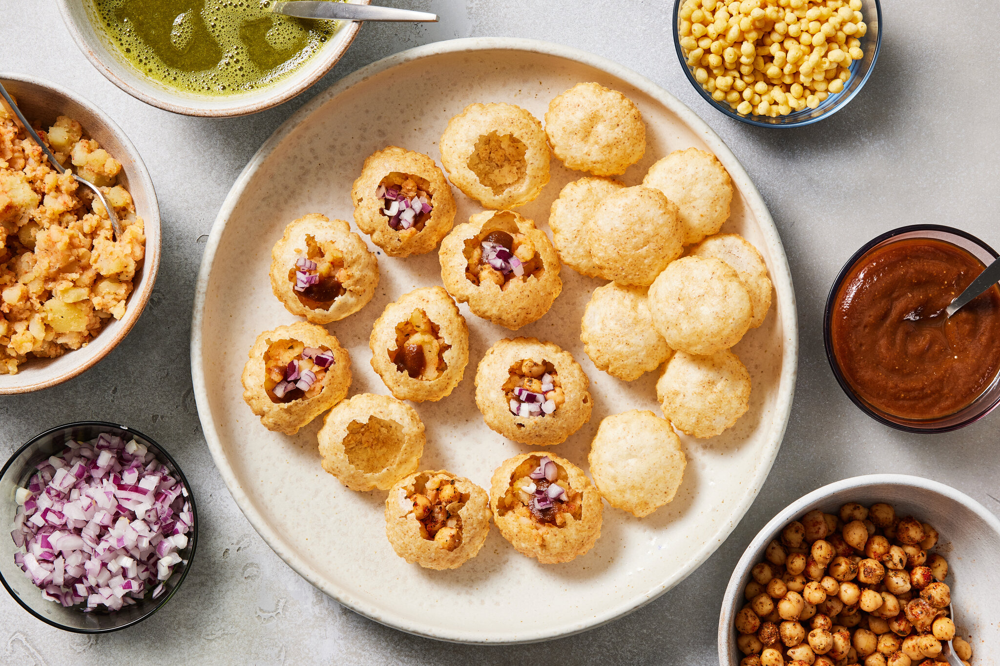

Nepali Dishes
In Nepal you've probably been wondering what types of food do many people eat and the answer is that there are multiple types of dishes that nepali people eat I will showing you many traditional dishes us nepali people eat
Sel Roti
Sel Roti is a nepali food made from rice and crust shaped like a doughnut its very tasetful and delightful

Pani Puri
Pani Puri is not only a indian food it is also a nepalese food it has this shpere shape chip and that you dip with any sauce and it would taste good
Garlic Naan
Garlic Naan is basically a roti with butter its much thicker and crispier than a roti

Ting momo
Ting momo is a steamed bun made from whole wheat rolled up and steamed